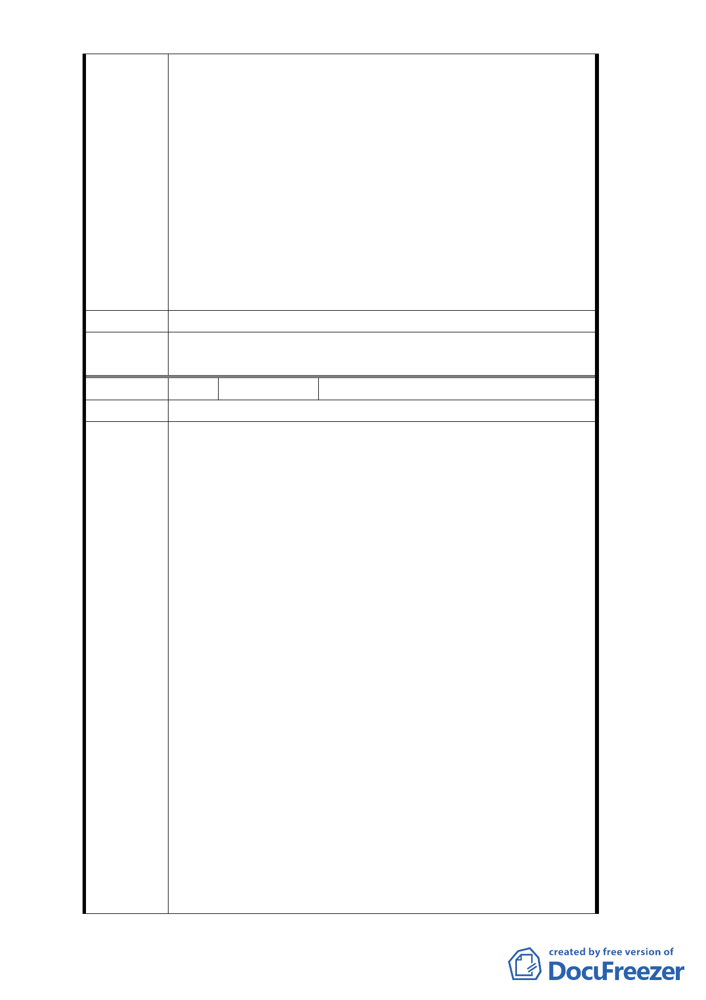

為西北角所有小宗地主代捐三成土地）顯然市政府
是將整體開發權利與捐地三成合併思考與處理，現
在卻要將捐地問題視為私權問題與整體開發權分
割處理，非常不公平，更何況威京公司因提出“京
華開發計畫”為了配合台北市政府的都市發展與
照顧西北角小宗地主的利益付出數億元費用聘請
國際知名建築師及顧問公司設計規劃整體開發方
案。
五、請臺北市政府審慎處理解除整體開發變更案，若侵
害本公司與威京公司之權益，本公司與威京公司將
依法維護股東權益。
六、特此函達，如有任何詢問，請洽聯絡人宋堃仁。
建議辦法
委
決
員
會
議
同編號1。
編 號3
陳情人 京○城股份有限公司
陳情位置
1.依臺北市政府 80 年 2 月 13 日府工二字第 80003366 號函
公告計畫案第 3 頁，本計畫區係變更為商業區（第三種
商業區），及第 4 頁，土地使用分區管制適用「臺北市土
地使用分區管制規則」第三種商業區有關規定，故本計
畫區原計畫應屬『第三種商業區』。惟臺北市政府 102
年 9 月 12 日府都規字第 10235776100 號公告公開展覽之
修訂開發方式細部計畫案，第 3 頁計畫範圍示意圖將本
計畫區列為『商三特』【參附件一：計畫範圍示意圖】 ，
經查本計畫區非屬市府 84 年 9 月 27 日公告發布實施「
修訂台北市主要計畫商業區（通槃檢討）計畫案」內變
更為商業區之範圍內，且於 80 年公告發布實施後，並未
陳情理由 有其他計畫案將本計畫區變更為『商三特』，故本次公開
展覽計畫書圖之歷史背景及正確性需再檢討修正。
2.本公司自 99 年開始即向臺北市政府都發局提出細部計
畫變更案申請解除都市計畫說明書規定之六種用途之限
制，至今已近五年，期間一再被都發局退回補正，延宕
迄今毫無結果，然本計畫區內西北角部分地主已提出申
請要進行都市更新作業，且大部分都是做住宅使用，若
只解除整體開發限制卻不解除六種使用用途之限制，等
同台北市政府鼓勵渠等變相違法使用，違背依法行政原
則。故因應本計畫區內所有地主之實際需要及節省社會
資源，都委會應要求都發局將本公司所提解除六種使用
用途限制之變更案併入本修訂案一同解決，才是現代化
- 24 -